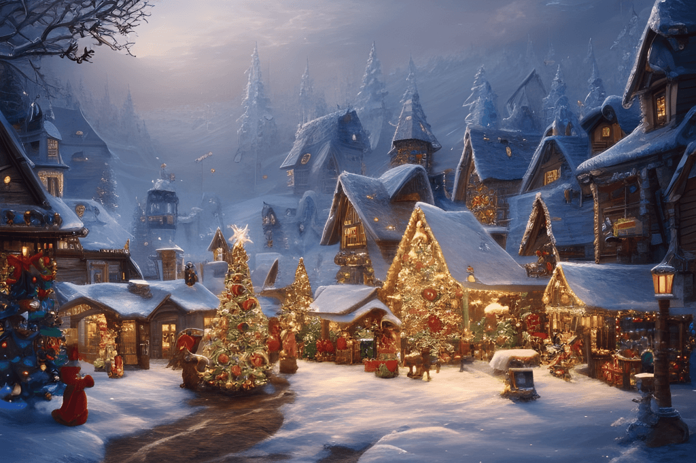

Boże Narodzenie – Magia Świątecznego Czasu
Boże Narodzenie to czas, który łączy ludzi w duchu miłości, radości i bliskości.W Polsce tradycje świąteczne są głęboko zakorzenione w kulturze, tworząc wyjątkową atmosferę, którą odczuwamy już na długo przed samymi świętami.
Wieczór wigilijny rozpoczyna się dzieleniem opłatka – symbolem pojednania i dobrych życzeń.
Na wigilijnym stole pojawia się 12 potraw, które odzwierciedlają obfitość i radość płynącą z tego szczególnego dnia.

Śpiewanie kolęd, blask choinki i prezenty to tylko część magicznego nastroju.
Boże Narodzenie to także czas refleksji i wdzięczności, który przypomina o wartościach takich jak miłość, pomoc bliźnim i pokój.
Zapraszamy do wspólnego celebrowania tych niezwykłych chwil w atmosferze tradycji i rodzinnego ciepła! 🎄✨